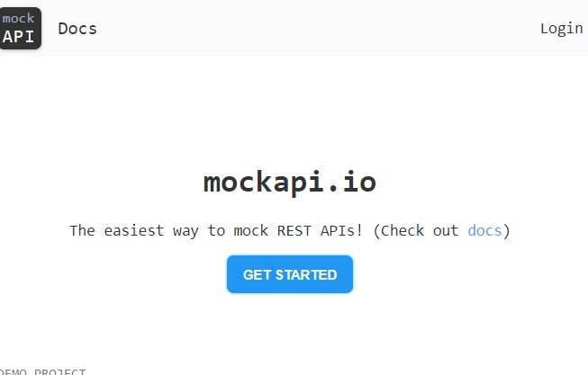
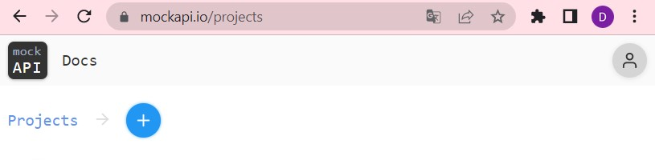
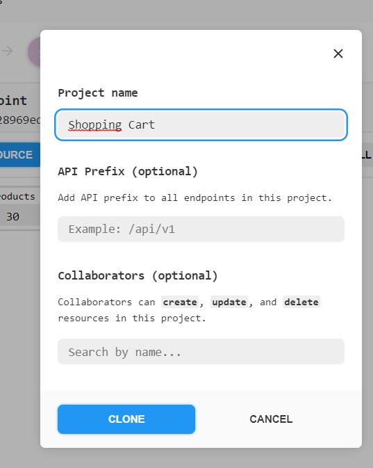
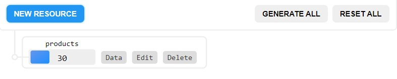
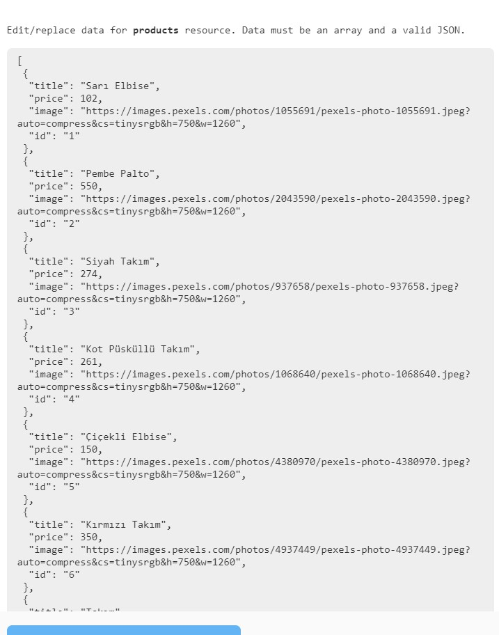

Merhaba arkadaşlar sayfamın css ve html kısımlarını sizlere anlatmayacağım.
Çünkü hepiniz basit de olsa birer sayfa yapmayı biliyorsunuzdur.Önemli olan Javascript
kısımlarıdır.Anlatımımı dinlemeden önce kahvenizi hazırlamayı unutmayın.
Yüklediğim Html ve Css kodlarındaki 'id' ve 'class' isimleriyle karşılaştırarak javascript kodlarını
yazmanızı tavsiye ediyorum.
Öncelikle alışveriş bir tane 'javascript'dosyası açın.
Sonrasında ise sayfamızın değişkenlerini yazalım.
const cartBtn =document.querySelector(".cart-btn");
const clearCartBtn =document.querySelector(".btn-clear");
const cartItems =document.querySelector(".cart-items");
const cartTotal =document.querySelector(".total-value");
const cartContent =document.querySelector(".cart-list");
const productsDOM =document.querySelector("#products-dom");
Satırlarda ki const yanındaki isimlerde htmlde yazdığım butonlara verdiğim sınıf adıdır. document.querySelector yazdığım bu kod
belirlenen id ve class'lardaki parantez içerisine etki etmesini sağlar.
'Products' diye oluşturulan sınıfa özellikler kattım burada da.
'async' yapısı promise yapısını daha kolay yazmamızı sağlayan özelliktir.
'try-catch' hata olduğunda catch kısmının çalışmasını sağlar bende catch kısmına konsola hatayı yazdırmasını istedim.Hatayı düzeltmeyi kolaylaştırsın diye.
'try' içerisine döndürülmesini istediğim özellikleri yazdım.Gelin bunlar neymiş bakalım;
Öncelikle kendime mockapi'den API oluşturdum.Sayfamdaki ürünleri oradan çekeceğim.O kısmı bu kodları anlattıktan sonra anlatacağım.
'await fetch'den sonra parantez içindeki url'den veri çekilmesini sağlar.
'result.json' ise veriyi okumaya yarar sağlar.
'let products=data' çekilen verilere izin vermeye yardımcı olur ve ürünlere ekler.
Şimdi mockapide API oluşturmayı anlatacağım;Öncelikle arama motoruna 'mockapi' yazın.
Görseldeki ilk seçeneğe tıklayıp karşınıza çıkan ekranda 'GET STARTED' yazısına tıklayın.
Kaydolma işlemini istediğiniz şekilde yapın.
Buradaki + işaretine tıklayarak yeni proje oluşturuyorsunuz.
Proje adını istediğiniz şekilde yazabilirsiniz.
Buraya tıklayın.
Sizi yukarıdaki ekran karşılayacaktır.30 Yazan yer sayfamdaki ürün sayısıdır.İsteğinize göre çoğaltıp azaltabilirsiniz.Burada 'Data'ya tıklayın.
Evvet istediğiniz ürünleri gösterdiğim örnekteki gibi ekleyin.
Burada işimiz bitti.Haydi gelin kod dinlemeye devam edin.
class UI{UI adında oluşturulan sınıfın özelliklerini anlatacağım sizlere.Sırayla söyleyeceğim ilk olarak:
'displayProducts' demek ürünleri görüntülemeyi sağlar.
Başına * işaretli olan kısım html kısmından gerekli olan yerin kodlarıdır.Orada $ ile yazdıklarım apı'den
çektiğim ürünlerin hepsine sırayla başlık fiyat ve resim eklemesini sağlıyor.Tek tek eklemekle uğraşmasını engelliyor.
İkinci * da ise html deki görüntülenen son hali göstermeye yarar.
Yukarıda açılan UI sınıfının içerisine altta verdiğim kodları ekleyin.
getBagButtons(){Şimdi bir önceki kodda yer alan 'btn-add-to-cart' sınıfına bir dizi oluşturuyorum.Bu kodlarda ki amaç sepete eklediğin ürünün üzerine bir kez daha tıklamanı engelliyor.
Diyelim ki bir ürünü ekledin sepete sepet işaretinin opaklığını düşürüp tıklanmasını 'disabled' ile engelledim.Sonrasında son durumları gösterdim sayfamda.
Bakın burada sepet işareti canlı ve tıklanabilir halde.Gelin sepete bu ürünü ekleyelim ve sonrasında ne olduğuna bakalım.
Gördüğünüz gibi sepet işaretinin opaklığı değişti.
saveCartValues(cart){Şimdi anlatacağım kısım sepetteki arttırma ve azaltma işaretlerini ayarlama.Önce sepetteki ürün mikatarını ve toplam tutarı 0 yaptım.
Sonrasında karta eklenen ürün varsa o ürünün fiyatını
eklenen sayı ile çarpmasını sağladım.
Ve toplam ücrete eklenen sayının fiyatını eklettim.En sonda ise güncel hallerini ekranda göstermesini sağladım.
En önemli kısıma geldik dikkatinizi toplayıp güzeelce dinleyin.
setupAPP(){ //*sayfa yüklendiğinde olur'SetupAPP' diye sınıf oluşturdum.Sayfa yeniden yüklendiğinde sepetin olduğu gibi kalmasını sağlıyor.Dİğer kod olan 'populateCart'
ise sepetteki ürünlerin sıralanmasını sağlar.
Evvet bitmek üzere az kaldı sabredin bakkim.Burada yaptığım şey sepetteki azaltma ve arttırma işaretlerinin çalışma düzenidir.
Sepette bir üründen 4 tane var diyelim.
Azalt işaretine tıkladığımızda bir bir azaltıyor 0 olduğunda ise ürünü sepetten siliyor.Arttırma da anlattığımın tam tersi olarak çalışıyor.Yani bir bir arttır kodu devreye giriyor bu sefer.
Önemli kodlar bunlar olduğu için diğerleri de bu anlattıklarımla aynı bakarak ilerlerseniz sizin için daha iyi olacaktır.
document.addEventListener("DOMContentLoaded", ()=>{Bu yukarıda yazılan kodlar fonksiyonu çağırmaya yarayan kodlardır.
Buraya kadar sıkılmadan okuyanlara teşekkür ediyorum.Umarım anlamışsınızdır.